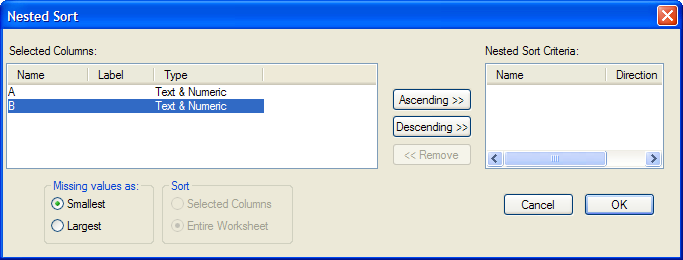
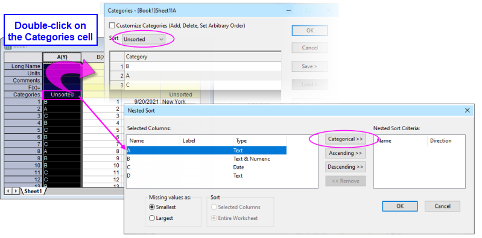

Arbeitsblattdaten sortieren
Wks-Sort-Data
Sie können einzelne Spalten, mehrere Spalten, einen Bereich von Arbeitsblattdaten oder ein gesamtes Arbeitsblatt sortieren. Origin bietet sowohl einfaches Sortieren als auch geschachteltes Sortieren:
Einfaches Sortieren
Beim einfachen Sortieren werden die angegebenen Daten durch eine Spalte "Sortieren nach" und einer gewählten Sortierreihenfolge sortiert.
Um eine einfache Sortierung der ausgewählten Daten auszuführen:
- Wählen Sie im Menü Worksheet: Spalten sortieren.
- Legen Sie Aufsteigend oder Absteigend im entsprechenden Untermenü fest.
- Wenn Sie eine Spalte oder einen Bereich aus einer Spalte markiert haben, sortiert Origin nur die ausgewählten Daten.
- Wenn Sie einen Bereich der Arbeitsblattspalten oder einen Bereich von Werten in mehreren Spalten markieren, sortiert Origin nur die ausgewählten Daten basierend auf den am weitesten links gelegenen ausgewählten Daten und der gewählten Sortierreihenfolge.
- Wenn die ausgewählte Spalte oder die am weitesten links ausgewählte Spalte auf Als kategorisch setzen festgelegt ist, können Sie nach Reihenfolge der Kategorien sortieren. Wenn Sortieren = Aufsteigend oder Absteigend, werden die Spalte(n) in dieser Reihenfolge sortiert. Wenn Unsortiert, wird die Spalte in der Reihenfolge sortiert, in der die Kategorien zuerst in der Spalte erscheinen (z. B. BBACB wird als BAC sortiert).
Beachten Sie, dass wenn Sie einen Bereich aus Zeilen und nicht die gesamte Spalte auswählen, der verfügbare Menübefehl zum Sortieren der Daten Worksheet: Bereich sortieren ist.
Um eine einfache Sortierung des gesamten Arbeitsblatts auszuführen:
- Wählen Sie Worksheet: Worksheet sortieren.
- Legen Sie Aufsteigend oder Absteigend fest.
- Wenn die am weitesten links befindliche Spalte Text- oder numerische Daten enthält, wird das gesamte Arbeitsblatt nach der am weitesten links ausgewählten Spalte sortiert.
- Wenn die am weitesten links befindliche Spalte auf Als kategorisch setzen festgelegt ist, können Sie nach Reihenfolge der Kategorien sortieren. Wenn Sortieren = Aufsteigend oder Absteigend, werden die Spalte(n) in dieser Reihenfolge sortiert. Wenn Unsortiert, wird die Spalte in der Reihenfolge sortiert, in der die Kategorien als Erstes in der Spalte erscheinen (z. B. BBACB wird als BAC sortiert).
 |
Mit Ausnahme von Text/CSV und Excel werden Daten, die mit einem Datenkonnektor importiert wurden, per Standard für die Bearbeitung gesperrt. Um sie zu entsperren, klicken Sie auf das Konnektorsymbol und wählen Importierte Daten entsperren. und wählen Importierte Daten entsperren.
|
Geschachteltes Sortieren
Um eine geschachtelte Sortierung der ausgewählten Daten auszuführen:
- Wählen Sie Arbeitsblatt: Spalten sortieren: Benutzerdefiniert.
oder
- Klicken Sie auf die Schaltfläche Sortieren in der Symbolleiste Worksheet-Daten.
Um eine geschachtelte Sortierung des gesamten Arbeitsblatts auszuführen:
- Markieren Sie das gesamte Arbeitsblatt und wählen Sie Arbeitsblatt: Worksheet sortieren: Benutzerdefiniert.
oder
- Markieren Sie das gesamte Arbeitsblatt und klicken auf die Schaltfläche Sortieren auf der Symbolleiste Worksheet Daten.
Der Dialog Geschachteltes Sortieren
- 
Wählen Sie die Spalte für die erste Sortierung aus dem Listenfeld Ausgewählte Spalten und klicken Sie auf die Schaltfläche Aufsteigend oder Absteigend. Wählen Sie anschließend die Spalte für die zweite Sortierung aus dem Listenfeld Ausgewählte Spalten und klicken Sie auf die Schaltfläche Aufsteigend oder Absteigend. Wählen Sie, falls benötigt, weitere Spalten.
Wenn Sie auf OK klicken, sortiert Origin die ausgewählten Daten, so dass die erste Spalte in auf- oder absteigender Reihenfolge sortiert ist. Befinden sich mehrere Zeilen mit dem gleichen Wert in der ersten Spalte, werden die Werte der entsprechenden Zeilen in der zweiten Spalte und die gewählte Sortierreihenfolge für die Reihenfolge dieser Werte verwendet. Dieser geschachtelte Prozess wird bis zur letzten im Listenfeld Kriterium für geschachteltes Sortieren ausgeführt.
Benutzerdefiniertes Sortieren der kategorialen Daten
Der Dialog Geschachteltes Sortieren kann auch um benutzerdefinierten Sortieren des Arbeitsblatt für kategoriale Datenspalten verwendet werden.
- Klicken Sie bei aktivem Arbeitsblatt auf Arbeitsblatt: Arbeitsblatt sortieren: Benutzerdefiniert.
- Markieren Sie im linken Bedienfeld unter Ausgewählte Spalten eine Spalte, die auf Als kategorisch gesetzt wurde. Es wurde eine Schaltfläche Kategorial wurde zum mittleren Bedienfeld hinzugefügt.
- Klicken Sie auf die Schaltfläche Kategorial, um die markierte kategoriale Spalte zu den Geschachtelten Sortierkriterien hinzuzufügen:
- Die kategoriale Spalte wird mit der Methode sortiert, die in der Zelle Kategorien der Arbeitsblattbeschriftungszeile gezeigt wird.
- Wenn die Kategorie Unsortiert ist, wird die Spalte in der Reihenfolge sortiert, in der die Kategorien als Erstes in der Arbeitsblattspalte erscheinen (Hinweis: Klicken Sie doppelt auf die Zelle der Beschriftungszeile im Arbeitsblatt, um den Dialog Kategorien zu öffnen und die Sortierreihenfolge anzuzeigen oder zu ändern).
- Sie können eine geschachtelte Sortierung für mehrere kategoriale Spalten vornehmen, bei der die Sortierpriorität von der Reihenfolge der Spalte im rechten Bedienfeld bestimmt wird.
- 